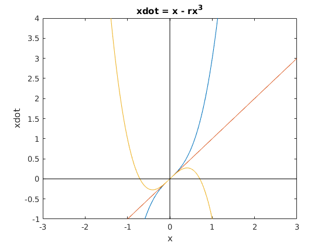

Homework 2
Rachael Steiner
Contents
For each of the following equations, sketch all of the qualitatively different vector fields (i.e., phase portraits) that occur as r is varied, and the bifurcation diagram. State what kind of bifurcation occurs, and the critical value of r at which it occurs. Finally, simulate one of them for values of r at, above, and below the critical value; plot x vs. t for 2 initial conditions for each r value, and comment on the results.
xdot = rx - x(1-x)
A transcritical bifurcation occurs at r = 1.
r1 = 0; r2 = 1; r3 = 2; x = -4:0.01:4; y = @(x, r) (x.*r) - x.*(1-x); y1 = feval(y, x, r1); y2 = feval(y, x, r2); y3 = feval(y, x, r3); figure(1) plot(x, y1); title('xdot = rx - x(1-x)'); xlabel('x'); ylabel('xdot'); axis([-3 3 -1 4]); hold on plot(x, y2) plot(x, y3) plot(x,zeros(1,length(x)), 'k'); plot(zeros(1,length(x)), x, 'k'); title(legend(num2str(r1), num2str(r2), num2str(r3)), 'r'); hold off
Bifurcation diagram
rmin = -4; rmax = 4; rstep = 0.01; rcrit = 1; xstar = @(r) (1-r); figure(2) hold on; bifplot(xstar, rmin, rmax, rstep, rcrit, 'before') bifplot(@(r) r.*0, rmin, rmax, rstep, rcrit, 'before') plot(zeros(1, 2), [-4 4], 'k') title('Bifurcation diagram for xdot = rx - x(1-x)'); axis([-4 4 -4 4]); hold off;
Simulate
tspan = [0 5]; x0 = 0; x0b = -1; yr1 = @(t, x) (x.*r1) - x.*(1-x); [t,x] = ode23(yr1, tspan, [x0 x0b]); figure(3) subplot(2,2,1) plot(t, x, '-d') title('xdot = -x(1-x)') xlabel('t') ylabel('x') title(legend(num2str(x0), num2str(x0b)), 'x0') yr2 = @(t, x) (x.*r2) - x.*(1-x); [t,x] = ode23(yr2, tspan, [x0 x0b]); subplot(2,2,2) plot(t, x, '-d') title('xdot = x - x(1-x)') xlabel('t') ylabel('x') title(legend(num2str(x0), num2str(x0b)), 'x0') yr3 = @(t, x) (x.*r3) - x.*(1-x); [t,x] = ode23(yr3, tspan, [x0 -0.8]); subplot(2,2,3) plot(t, x, '-d') title('xdot = 2x - x(1-x)') xlabel('t') ylabel('x') title(legend(num2str(x0), num2str(-0.8)), 'x0')

For all values of r, x = 0 is a fixed point. For r < 1 and x0 = -1, the system converges on zero quickly. For r = 1 and x0 = -1, the system converges on zero, but takes more time to do so. For r > 1, both x = 0 and x = -1 are fixed points, and when x0 = -0.8, the system converges on x = -1 quickly.
xdot = x - rx(1-x)
A transcritical bifurcation occurs at r = 1
r1 = 0.5; r2 = 1; r3 = 2; x = -4:0.01:4; y = @(x, r) x - r.*x.*(1-x); y1 = feval(y, x, r1); y2 = feval(y, x, r2); y3 = feval(y, x, r3); figure(4) plot(x, y1); hold on; plot(x, y2) plot(x, y3) title('xdot = x - rx(1-x)'); xlabel('x'); ylabel('xdot'); axis([-4 4 -1 4]); plot(x,zeros(1,length(x)), 'k'); plot(zeros(1,length(x)), x, 'k'); title(legend(num2str(r1), num2str(r2), num2str(r3)), 'r'); hold off;
Bifurcation diagram
rmin = -4; rmax = 4; rstep = 0.01; rcrit = 1; xstar = @(r) (r - 1)./r; figure(5) hold on; bifplot(xstar, rmin, rmax, rstep, rcrit, 'before') bifplot(@(r) r.*0, rmin, rmax, rstep, rcrit, 'before') title('Bifurcation diagram for xdot = x - rx(1-x)'); axis([-4 4 -4 4]); plot(zeros(1, 2), [-4 4], 'k'); hold off;
Simulate
tspan = [0 5]; x0 = 0; x0b = -1; yr1 = @(t, x) x - r1.*x.*(1-x); [t,x] = ode23(yr1, tspan, [x0 -0.8]); figure(6) subplot(2,2,1) plot(t, x, '-d') title('xdot = x - 0.5x(1-x)') xlabel('t') ylabel('x') title(legend(num2str(x0), num2str(-0.8)), 'x0') yr2 = @(t, x) x - r2.*x.*(1-x); [t,x] = ode23(yr2, tspan, [x0 x0b]); subplot(2,2,2) plot(t, x, '-d') title('xdot = x - x(1-x)') xlabel('t') ylabel('x') title(legend(num2str(x0), num2str(x0b)), 'x0') yr3 = @(t, x) x - r3.*x.*(1-x); [t,x] = ode23(yr3, tspan, [x0 x0b]); subplot(2,2,3) plot(t, x, '-d') title('xdot = x - 2x(1-x)') xlabel('t') ylabel('x') title(legend(num2str(x0), num2str(x0b)), 'x0')

For all values of r, x = 0 is a fixed point. For r < 1, x = -1 is also a fixed point. When x0 = -0.8, system converges on x = -1. For r = 1 and x0 = -1, the system converges on zero. For r > 1 and x0 = -1, the system converges on zero quickly.
xdot = x - rx^3
A supercritical pitchfork bifurcation occurs at r = 0.
r1 = -2; r2 = 0; r3 = 2; x = -4:0.01:4; y = @(x, r) x - (x.^3).*r; y1 = feval(y, x, r1); y2 = feval(y, x, r2); y3 = feval(y, x, r3); figure(7); plot(x, y1); hold on; plot(x, y2); plot(x, y3); plot(x,zeros(1,length(x)), 'k'); plot(zeros(1,length(x)), x, 'k'); title('xdot = x - rx^3'); xlabel('x'); ylabel('xdot'); axis([-3 3 -1 4]); hold off;
Bifurcation diagram
rmin = -4; rmax = 4; rstep = 0.01; rcrit = 0; xstar = @(r) (-(r.^0.5))./r; xstarb = @(r) (r.^0.5)./r; figure(8) hold on; bifplot(xstar, rmin, rmax, rstep, rcrit, 'after') bifplot(xstarb, rmin, rmax, rstep, rcrit, 'after') bifplot(@(r) r.*0, rmin, rmax, rstep, rcrit, 'after') title('Bifurcation diagram for xdot = x - rx^3'); % xlabel('r'); % ylabel('x'); axis([-4 4 -4 4]); plot(zeros(1, 2), [-4 4], 'k'); hold off;
Simulate
tspan = [0 3]; x0 = 0; x0b = -1; yr1 = @(t, x) x - (x.^3).*r1; [t,x] = ode23(yr1, tspan, [x0 x0b]); figure(9) subplot(2,2,1) plot(t, x, '-d') title('xdot = x + 2x^3') xlabel('t') ylabel('x') title(legend(num2str(x0), num2str(x0b)), 'x0') yr2 = @(t, x) x - (x.^3).*r2; [t,x] = ode23(yr2, tspan, [x0 x0b]); subplot(2,2,2) plot(t, x, '-d') title('xdot = x') xlabel('t') ylabel('x') title(legend(num2str(x0), num2str(x0b)), 'x0') yr3 = @(t, x) x - (x.^3).*r3; [t,x] = ode23(yr3, tspan, [x0 x0b]); subplot(2,2,3) plot(t, x, '-d') title('xdot = x - 2x^3') xlabel('t') ylabel('x') title(legend(num2str(x0), num2str(x0b)), 'x0')
Warning: Imaginary parts of complex X and/or Y arguments ignored Warning: Imaginary parts of complex X and/or Y arguments ignored Warning: Failure at t=2.030510e-01. Unable to meet integration tolerances without reducing the step size below the smallest value allowed (4.440892e-16) at time t.
For all values of r, x = 0 is a fixed point. For r = -2 and x0 = -1, the system diverges from x = 0. For r = 0, the system is stable for x0 = 0 and x0 = -1. For r = 2 and x0 = -1, the system onverges on -sqrt(2)/2.